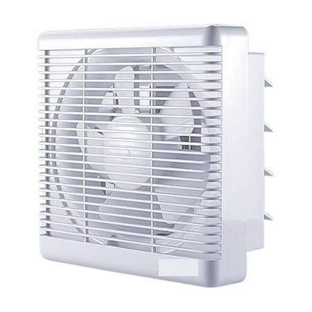

Washing ingredients keeps them fresh and safe, and it's also great for cleaning and disinfecting cooking utensils!
You'll really appreciate the ease of use of e-WASH when it comes to maintaining hygiene in your kitchen.


STOVE
Heat up the e-WASH
Pour the undiluted e-WASH, or a solution diluted to 2:1 volume and boiled, into a basin.
Soak the parts
Soak the burner cap and other parts for 5-10 minutes.
Scrub & Rinse
For stubborn stains, scrub with a sponge and rinse with tap water.
CUTTING BOARD
Spray it on
Spray e-WASH evenly into the small scratches on the cutting board.
Scrub & Rinse
Scrub away dirt with a sponge and rinse with tap water. For enhanced disinfection, spray e-WASH again before storing.


VENTILATION FAN
Spray onto the hood
Spray e-WASH evenly onto the hood area and wipe it off with a microfiber cloth.
Soak filters
Remove the fan and filters, soak them in e-WASH for about 10 minutes, and then wipe them dry with a cloth.
MICROWAVE
Spray & Wipe
For regular cleaning, simply spray the cleaner directly into the oven and wipe it off with a dry cloth.
Deep Clean
For heavy soil, add 30ml of e-WASH to a dish and heat until it evaporates inside the unit.